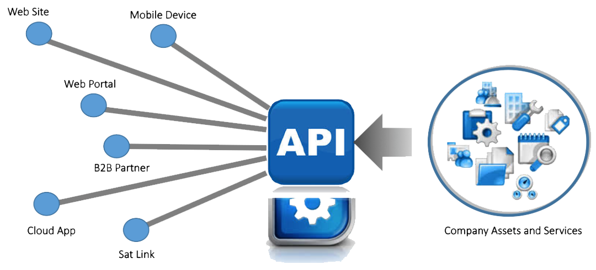
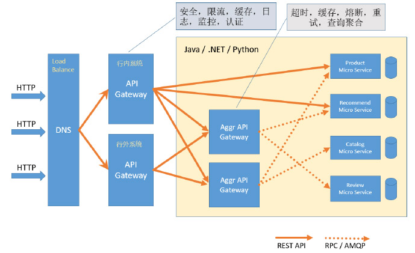

银行API网关
云安全访问服务边界完全基于云计算的安全服务
中国市场领先的SASE架构
云原生的SASE架构通过整合和简化IT服务来消除网络和安全冲突，加速迁移到云。 独家提供软件即服务的安全服务,又能提供客户密钥和审计独自管理的功能， 客户不需要管理各种上云设备和各个独立的安全服务为用户提供简捷和透明的安全上云体验滴雨自身提供的的分布式安全服务节点, 贴近用户提供更佳的用户体验和真正做到一体化安全策略管理，优化流量路由以提供最佳的用户体验 。 零信任网络访问 提供了以用户和应用为中心的方法 访问应用程序。 零攻击面架构通过混淆源IP地址来隐藏源身份， 并避免将公司网络暴露在外。

完全基于云原生软件的部署
ID即安全主体到人，到设备到时间和地点 主体贯穿所有软件定义网络网络防火墙网页防火墙 零信用网络接入， 云应用安全代理和应用API安全等安全服务
- 统一安全策略和管理
- 统一数据丢失保护管理
- 统一可视化中控平台
- 效率最大化，管理最简化，延迟最低化安全，最优化
国密加密
客体到字段敏感数据国密加密 解密和TLS代表通道加密。根据业务的需求，两个地方对数据进行了加密
在数据加密引擎中实现了数据的加密：这部分加密是针对字段级别的加密，后期根据业务需求，可以做针对记录的加密
在数据库中可选通过增加插件实现加密：这部分加密是表级别的加密，这部分加密不会对数据进行区分，会对所有的数据进行加密
